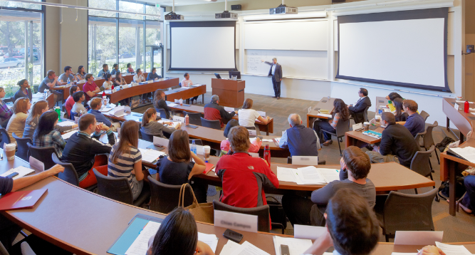

LIFE AT RIST
WELCOME TO THE RIST DIFFERENCE
We are committed to fostering an inclusive and culturally diverse study and work environment that is free from discrimination of any kind.
All our courses are conducted in English, and we encourage our students and staff to communicate in English while on campus.
We welcome both Australian and International Students as part of our student cohort.
We are focused on the student experience, especially helping International Students adjust to living and studying in a new country.
We value the diversity this creates in the classroom, the opportunity for students to share their experiences from different parts of the world, and the learning this brings.
EMPOWERING WOMEN IN IT
SISTC understands the challenges women can face in their journey on an IT career. Through its approach to teaching, student support and mentoring, SISTC prides itself on being a preferred study destination for women in IT.
